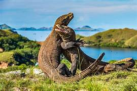
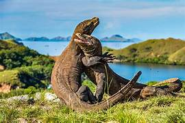

Indonesia adalah negara yang kaya akan budaya dan alam. Dari pegunungan yang indah hingga pantai-pantai eksotis, Indonesia memiliki banyak hal untuk ditawarkan kepada para wisatawan.
Dibuat oleh : Joni Prianto
Indonesia juga terkenal dengan masakan lezatnya. Beberapa makanan khas Indonesia yang wajib dicoba antara lain:
Jangan lupa mencicipi juga kopi khas Indonesia yang terkenal, seperti Kopi Bali dan Kopi Toraja.

 


Apakah Anda siap menjelajahi keindahan Indonesia?